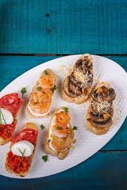

Una tapa en España es un aperitivo que se sirve en la mayoría de los bares o restaurantes acompañando a la bebida.

Suele incluir una amplia variedad de platos y alimentos, como carnes asadas, pescado a la parrilla, papas fritas, quesos, panes salados, sopas y muchos otros.

Estos manjares suelen estar cargados de azúcar, lo que les confiere su característico sabor dulce y tentador.